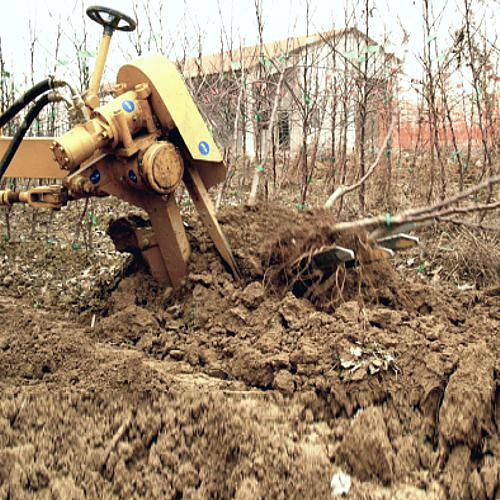
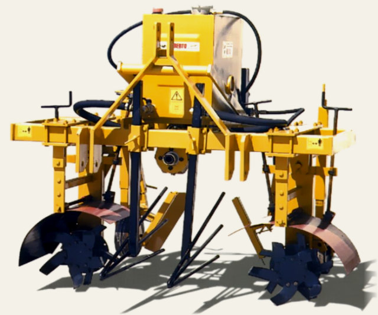
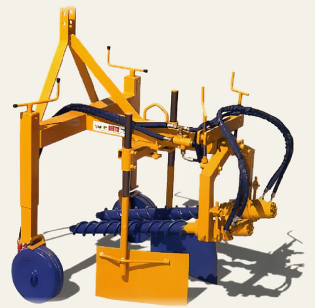
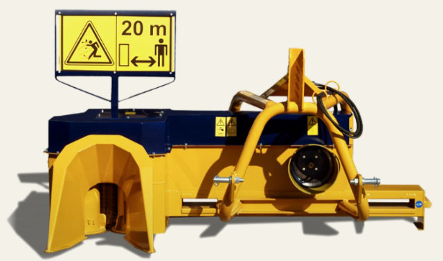
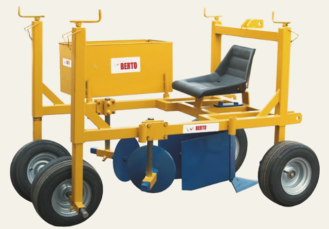
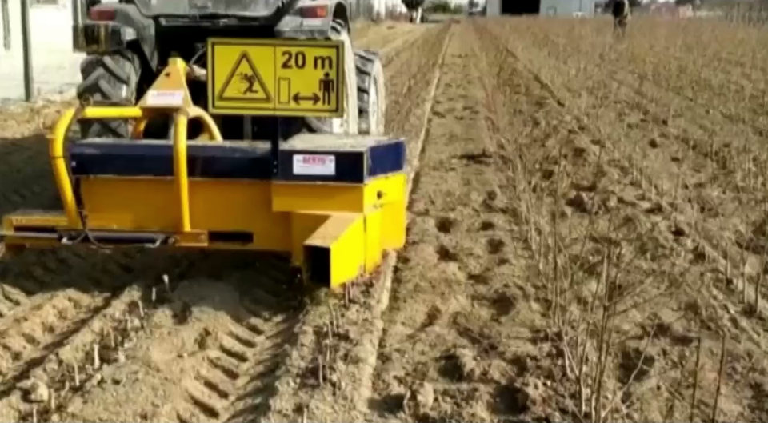

Macchine speciali per vivai
Dal 1961 a Saonara costruiamo macchine per i vivai. Lo sterrapiante è totalmente idraulico, sposta il vomere fuori carreggiata fino a un metro e si fa in tre versioni.
- Trattore
- 60/100HP
- Larghezza
- 110cm
- Peso
- 500kg
Attacco a tre punti, PTO 540 giri.
La scheda tecnicaIl video in campo

Il vomere passa sotto la fila, solleva la zolla e la apre
Sterra a radice nuda piante da frutto, viti, rose, semenzai, pioppi, carpani e tigli. La pianta resta sul terreno, pronta per essere raccolta.
Le altre macchine per il vivaio
Costruite da noi, dal trapianto alla ceppaia.
-

Rincalzatrice per ceppaie di porta innesti
trattore 70 HP, 515 kg, 170 × 140 cm, alta 170 cm
-

Rincalzatrice primi rami per ceppaia
due spirali movimentate a olio, 210 kg
-

Trincia Piragna
taglia e sminuzza in una passata, 420 kg
-

Agevolatrice
si pianta da seduti, zolle fino a 25 cm
E poi la trapiantatrice a ruota TT da 1, 2 o 3 file, la fresatrice multipla alta, lo scalzapneus a soffio d'aria, il rimorchio agricolo omologato da 3500 kg, il trattorino 4 RM con motore Kubota, i bancali zincati a caldo e il materiale per l'innesto.
Tutte le schedeOfficina e negozio
La nostra officina meccanica assicura l'assistenza dopo la vendita su tutte le nostre macchine e attrezzature. In negozio trovate accessori e pezzi di ricambio.
Siamo concessionari di
Honda, Stihl, Grin, Etesia, Toro, Goldoni, S.E.P., Maito, Felco, Vesco, Kuker
Trattori, motocoltivatori, motozappe, rasaerba, motoseghe, decespugliatori, soffiatori, motopompe e generatori.
La nostra ditta nasce nel 1961.
Costruiamo macchine per la lavorazione dei vivai e le vendiamo direttamente.
